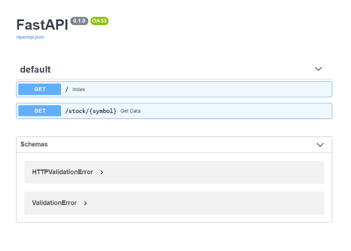
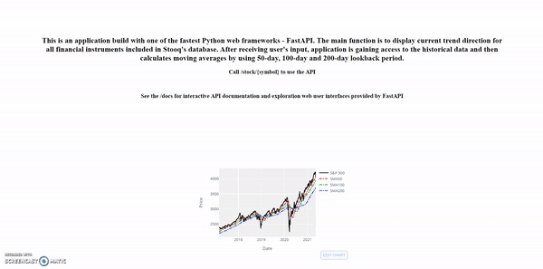

Stooq APITrend Filter
Technical Analysis
 This is an application build with one of the fastest Python web frameworks - FastAPI. The main function is to display current trend direction for all financial instruments included in Stooq's database. After receiving user's input, application is gaining access to the historical data and then calculates moving averages by using 50-day, 100-day and 200-day lookback period.
Features:
- Basic HTML landing/index page
- Interactive API documentation and exploration web user interfaces provided by FastAPI
- Returns HTTP Exception with status code of 404 for non existing symbols/tickers
- Embedded interactive plotly visualizations chart

| Live | Code | Image | Technologies |
|---|
 | |  | |